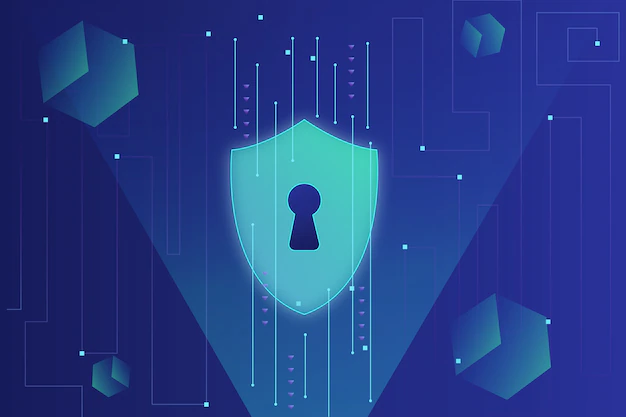
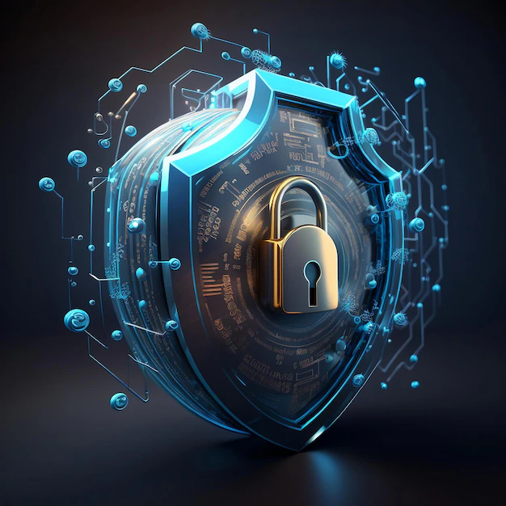

Understanding the Significance of Data Privacy
Data privacy is the linchpin of our digital age, a fundamental concept
that underpins trust, security, and individual rights in our
interconnected world. Its significance lies in its role as a safeguard
for our most personal and sensitive information, from financial data to
intimate conversations. Data privacy ensures that individuals have
control over what data is collected about them, how it is used, and who
has access to it. It protects us from potential abuses, such as identity
theft, fraud, and unauthorized surveillance. Moreover, data privacy is
vital for fostering trust in the digital landscape, both in our
interactions with businesses and the exchange of information with
friends and family. It empowers individuals to make informed choices
about how their data is used, and it imposes ethical responsibilities on
organizations that handle that data. In a world where data is the
lifeblood of the digital economy, data privacy is not just a matter of
individual rights but a cornerstone of modern society's trust and
integrity.

Achieving Data Privacy: Steps for Individuals and Organizations
Achieving data privacy requires a combination of personal practices and
measures, as well as the responsible handling of data by organizations.
Here are steps to help you achieve and maintain data privacy:
-
For Individuals:
-
Strong Passwords: Use complex, unique passwords
for each online account, and consider using a password
manager to keep them secure.
-
Two-Factor Authentication (2FA): Enable 2FA
whenever possible to add an extra layer of security to your
accounts.
-
Regular Updates: Keep your software, operating
systems, and applications up to date to patch security
vulnerabilities.
-
Secure Browsing: Use secure and updated web
browsers. Be cautious of suspicious websites and emails to
avoid phishing attempts.
-
Limit Personal Information Sharing: Be cautious
about what personal information you share online and with
whom.
-
Privacy Settings: Adjust the privacy settings
on social media accounts and online services to control what
information is shared.
-
For Organizations:
-
Data Protection Policies: Establish
comprehensive data protection policies, including data
classification and handling procedures.
-
Employee Training: Educate employees about data
privacy best practices and make them aware of the
organization's policies.
-
Access Control: Implement strict access
controls, ensuring that only authorized personnel can access
sensitive data.
-
Data Encryption: Encrypt sensitive data at rest
and in transit to protect it from unauthorized access.
-
Regular Audits: Conduct regular security audits
and vulnerability assessments to identify and address
potential weaknesses.
-
Incident Response Plan: Develop a clear
incident response plan to address data breaches and security
incidents promptly.
|

|